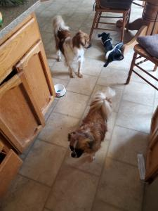

Their names are:
We got our dogs as puppys! They're more of my moms dogs, but I love them just the same.
Bailey is a shih tzu. He has a ressessive gene that gives him shorter fur then usual. He is a pure bread though, he just doesn't look like one! Because he's a shih tzu, he likes to cuddle all day rather then play.
Benji is some sort of mutt. We think he's part Brittney, but we're not super sure. He has an under bite which causes him to have a hard time eating, but he's learned to slow down. Benji is super hyper but also scared of his own shadow.
